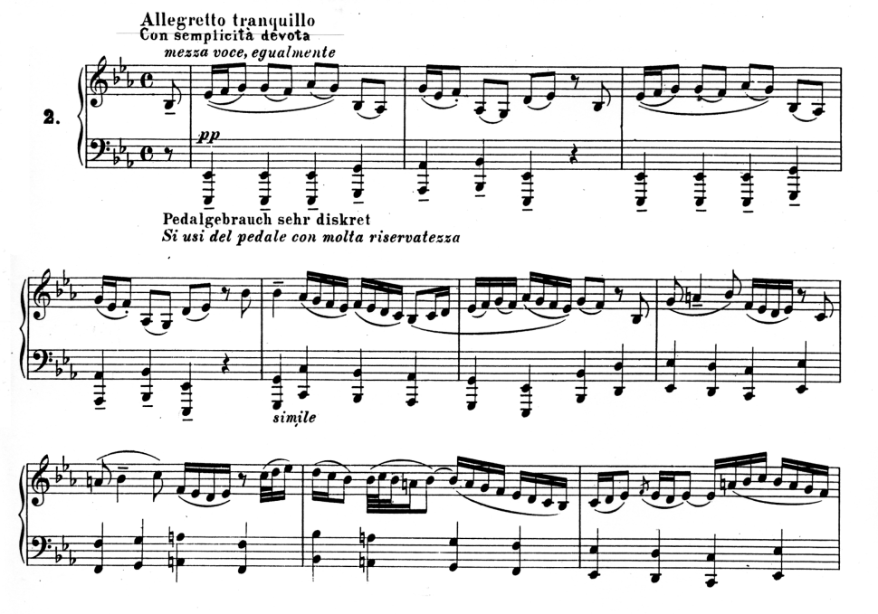

Органное творчество Баха
Орган – любимый инструмент Баха, постоянный спутник его жизни
С ранних лет Бах ощущал своим призванием органное поприще, неустанно учился искусству органной импровизации, явившейся основой его композиторского мастерства. Еще ребенком, в родном Эйзенахе, он слушал игру на органе своего дяди, а затем, в Ордруфе – брата. В Арнштадте Бах сам начинает работать органистом, и несомненно, уже там пробует сочинять для органа, хотя его хоральные обработки, смущавшие арнштадтских прихожан своей необычностью, и не дошли до нас. В должности органиста композитор служил и в Веймаре, где полностью сформировался его самобытный органный стиль. Как известно, именно на Веймарские годы приходится исключительная активность в области баховского органного творчества – создано большинство органных сочинений: Токката и фуга d-moll, Токката, adagio и фуга C-dur, Прелюдия и фуга a-moll, Фантазия и фуга g-moll, Пассакалия c-moll и многие другие. Даже когда в силу обстоятельств композитор переключался на другую работу, он не расставался с портативом – переносным органом. Не нужно забывать и то, что в сопровождении органа звучали в церкви баховские оратории, кантаты, пассионы. Именно через орган Бах был известен своим современникам. В органных импрорвизациях он достиг высшего совершенства, потрясая всех, кто мог его слышать. Прославленный органист Ян Рейнкен, уже на склоне лет, услышав игру Баха, произнес: «Я думал, что это искусство уже давно умерло, но теперь я вижу, что оно живет в Вас!»
Основные черты органного стиля
В баховскую эпоху орган был «королем всех инструментов» – самым мощным, полнозвучным и красочным. Он звучал под просторными сводами церковных соборов с их пространственной акустикой. Органное искусство было обращено к широким массам слушателей, отсюда такие качества органного музыки, как ораторский пафос, монументальность, концертность. Подобный стиль требовал развернутых форм, виртуозности. Органные произведения подобны монументальной (фресковой) живописи, где всё подано крупным планом. Неудивительно, что самые величественные инструментальные произведения Бах создал именно для органа: Пассакалия c-moll, Токката, adagio и фуга C-dur, Фантазия и фуга g-moll и другие.
Традиции немецкого органного искусства. Хоральные прелюдии.
Органное искусство Баха выросло на богатой почве, ведь в развитии органной музыки наиболее важную роль сыграли именно немецкие мастера. В Германии органное искусство достигло небывалого размаха, выдвинулась целая плеяда замечательных органистов. Многих из них Баху довелось слышать: в Гамбурге – Я. Рейнкена, в Любеке – Д. Букстехуде, который был особенно близок Баху. От своих предшественников он воспринял основные жанры немецкой органной музыки – фугу, токкату, хоральную прелюдию.
В органном творчестве Баха можно выделить 2 жанровые разновидности:
- хоральные прелюдии, как преимущественно небольшие композиции;
- «малые» полифонические циклы, как произведения крупной формы. Они состоят из какой-либо вступительной пьесы и фуги.
Бах написал более 150 хоральных прелюдий, большинство из которых заключено в 4-х сборниках. Особое место среди них занимает «Органная книжечка» – самый ранний (1714–1716), состоящий из 45 обработок. Позднее появился сборник «Клавирные упражнения», включающий 21 обработку, некоторые из которых рассчитаны на органное исполнение. Следующее собрание – из 6-ти пьес – известно под названием «шюблеровских хоралов» (по имени издателя и органиста Шюблера, ученика Баха). Последний сборник хоральных обработок – «18 хоралов» – композитор подготовил к печати незадолго до смерти.
При всем разнообразии баховских хоральных прелюдий, их объединяют:
- небольшие масштабы;
- господство мелодического начала, поскольку жанр хоральной обработки связан с вокальными напевами;
- камерный стиль. В хоральных прелюдиях Бах подчеркнул не огромные ресурсы мощного органного звучания, а его красочность, тембровое богатство;
- широкое использование полифонических приемов.
Круг образов хоральных прелюдий связан с содержанием лежащих в их основе хоралов. В целом это образцы философской баховской лирики, размышления о человеке, его радостях и печалях.
Прелюдия Es-dur
(«Проснитесь, голос нас сзывает»)
Ее музыка носит величаво–спокойный, просветленный характер, развивается плавно и неторопливо. Тема хорала довольно однообразна в ритмическом и мелодическом отношении. Она основана на движении по устойчивым ступеням лада с многократными повторениями одного звука. Однако Бах начинает свою прелюдию не с хоральной мелодии, а с собственной темы – более напевной, гибкой и подвижной, и вместе с тем родственной хоралу. 
Развиваясь, эта тема непрерывно обогащается интонационно и ритмически. В ней возникают широко распевные фразы, расширяется диапазон. Наряду с этим в ней обостряется неустойчивость, секвентно повторяется мотив вздоха, который становится средством нагнетания экспрессии.
Тональный план прелюдии охватывает родственные бемольные тональности. Ладотональное развитие направлено от светлых мажорных красок к более темному минорному колориту в середине, а затем к возвращению исходного светлого звучания.
Разреженная, ясная фактура прелюдии основана на двух основных мелодических линиях, далеко отстающих друг от друга (это создает ощущение пространственной широты). Средние голоса, где излагается тема хорала, включаются позднее и также обладают мелодической самостоятельностью.
Прелюдия f-moll
(«Я взываю к тебе, Господи»)
В этой прелюдии мелодия хорала помещена в верхний голос, она господствует, определяя весь облик произведения. Баху принадлежит гармонизация напева и создание фактуры аккомпанемента.
Тема хорала отличается песенностью, основана на плавных мягких интонациях. Ритмическое однообразие, подчеркнутое ровным движением басов, придает музыке строгость и собранность. Основное настроение – глубокая сосредоточенность, возвышенная печаль.
В фактуре ясно выделяется три плана: верхний голос (собственно тема хорала, звучание которой в среднем регистре напоминает пение), линия баса и средний голос – интонационно очень выразительный и ритмически подвижный. Форма 2-х частная. Первый раздел ясно членится на предложения, завершается четкой каденцией. Второй развивается более непрерывно.
Двухчастные полифонические циклы
Двухчастные композиции, состоящие из какой-нибудь вступительной пьесы (прелюдии, фантазии, токкаты) и фуги, встречались уже у композиторов добаховского поколения, но тогда они были скорее исключением, чем правилом, закономерностью. Преобладали либо самостоятельные, не связанные друг с другом фуги, токкаты, фантазии, либо одночастные композиции смешанного типа. В них свободно сочетались прелюдийно–импровизационные и фугированные эпизоды. Бах нарушил эту традицию, разграничив контрастные сферы в двух отдельных, но органично взаимосвязанных частях полифонического цикла. В первой части концентрировалось свободное, импровизационное начало, во второй – фуге – строго организованное. Музыкальное развитие в фуге всегда подчиняется законам логики и дисциплины, протекает в строго определенном «русле». Продуманная система композиционных приемов фуги сложилась уже до Баха, в творчестве его предшественников – немецких органистов.
Вступительные же части полифонического цикла такой «заданности» не имели. Они выработались в практике свободного прелюдирования на органе, то есть отличались импровизационной природой – полной свободой в выражении эмоций. Для них характерны:
- «общие формы» движения – виртуозные пассажи, гармонические фигурации, то есть движение по звукам аккордов;
- секвентное развитие небольших мелодических ячеек;
- свободная смена темпов, различных по характеру эпизодов;
- яркие динамические контрасты.
Каждый полифонический цикл Баха обладает своим неповторимым обликом, индивидуальным художественным решением. Общим же, и обязательным принципом является гармоничное единство двух составляющих его частей. Это единство не ограничивается общей тональностью. Так, например, в самом популярном баховском органном цикле – Токкате и фуге d-moll – единство композиции вытекает из многосторонних внутренних связей токкаты и фуги.
Музыка токкаты производит впечатление могучей силы, мятежности. Величавая патетика захватывает с первых же звуков вступления – небольшого, но очень эффектного, задающего тон всему дальнейшему. Тема вступления начинается как бы сразу с кульминации («вершины–источника»), на ff, в мощном органном унисоне. Она основана на декламационных, ораторских, призывных интонациях, которые благодаря сильной звучности и многозначительным паузам звучат очень внушительно.
Те же интонации лежат в основе темы фуги – спуск по гамме минорного лада от V ступени к вводному тону. Благодаря безостановочному остинатному бегу 16-х музыка фуги имеет характер активный, энергичный, моторный. В ее теме есть явное сходство и со вторым разделом токкаты [1]– наличие скрытого двухголосия, многократное повторение звука «ля», одинаковый ритмический рисунок. По-существу, обе темы воспринимаются как два варианта одного тематического материала (тема фуги – как зеркальное отражение 2-го раздела токкаты).
В более крупном плане единство токкаты и фуги заложено в самой композиции цикла. Кульминацией всего произведения является заключительный раздел фуги – большая кода патетического характера. Здесь возвращаются образы токкаты, а полифонические приемы уступают место гомофонно-гармоническим. Вновь звучат массивные аккорды и виртуозные пассажи. Таким образом в цикле возникает ощущение трехчастности (токката – фуга – токкатная кода).
Кроме того, в фуге d-moll есть еще одна особенность, подчеркивающая ее родство с токкатой – обилие интермедий. Интермедии в основном состоят из «ломаных» аккордов, их секвентного развития. Благодаря этому полифонический стиль фуги несколько приближается к гомофонно-гармоническому, перекликаясь с импровизационной манерой токкаты.
Объединение двух частей полифонического цикла может основываться не на родстве, а наоборот, на ярком контрастном сопоставлении их музыкальных образов. Так выстроен, например, g-moll-ный органный цикл.
Фантазия и фуга g-moll
Музыка фантазии своими истоками связана с суровыми и величественными образами хоровых сочинений Баха – его си-минорной мессы или пассионов. В ней сопоставлены две контрастные эмоциональные сферы. Первая – трагедийная. Сочетание могучих аккордов с одноголосным речитативом в напряженной тесситуре подобно чередованию хора с солирующим голосом. Музыкальное развитие протекает в атмосфере нарастающей напряженности. Благодаря органному пункту возникают резко неустойчивые, диссонантные аккорды, речитативные фразы постепенно всё больше насыщаются драматизмом.
Вторая тема всеми компонентами противоположна первой. На фоне размеренно спокойных ходов нижнего голоса верхние голоса имитируют небольшую лирическую попевку, основанную на уменьшенном трезвучии. Минорные лад, мягкость звучания придают музыке оттенок возвышенной отрешенности. Заканчивается она задумчиво и печально нисходящей секундовой интонацией.
Почти всё дальнейшее продолжение фантазии занимает сложное развитие первой темы. Драматизм общего звучания усугубляет краткая реприза второй темы, поднятой в более высокий регистр.
Трагедийности фантазии противостоит энергия и активность фуги. Она отличается танцевальным характером и явными связями с бытовой светской музыкой. Близость к народно-жанровым истокам проявляется, в частности, в репризном строении темы, ее завершенности, в периодичности ритмических акцентов. В теме выделяются широкие, «бойкие» скачки на квинту, октаву, которые в сочетании с пружинистым упругим ритмом создают образ очень динамичный. Энергию движения поддерживает и ладотональное развитие: тоника и доминанта основной тональности сопоставляются с тоникой и доминантой параллельного мажора.
Форма фуги опирается на репризную трехчастность. Первую часть составляют экспозиция и контрэкспозиция, затем следует большая средняя разработочная часть и сокращенная реприза. Каждому проведению темы предшествуют развернутые интермедии.
Огромная внутренняя контрастность отличает и органный цикл C-dur, композиция которого расширена за счет включения еще одной, 3-й, части.
Токката, adagio и фуга C-dur
Линия образного развития направлена здесь от величавой патетики токкаты к возвышенной лирике Adagio, далее к мощному Grave (заключительный раздел Adagio) и, наконец, к танцевальной динамике фуги.
Основной принцип построения токкаты – импровизационность. Она состоит из нескольких относительно завершенных разделов, которые отличаются друг от друга типом мелодического движения (это либо виртуозные пассажи, либо секвентное развитие небольших мелодических оборотов, либо аккордовая фигурация – движение по звукам аккордов). Вместе с тем, в токкате есть ясная объединяющая логика: неуклонное нарастание от начала к концу – заключительной величественной вершине. Оно достигается постепенным наращиванием общей звучности, уплотнением фактуры (за счет разветвления голосов, их перекличек в разных регистрах). На последнем этапе этого движения в действие включаются самые низкие звуки органа – органная педаль.
В Adagio всё контрастно по отношению к токкате: минорная тональность (параллельный a-moll), камерность звучания – в духе хоральных прелюдий, однотипная фактура на всём протяжении (ведущий голос и сопровождение), однородный тематизм, отсутствие виртуозного блеска, ярких кульминационных взлетов. На всём протяжении Adagio сохраняется настроение глубокой сосредоточенности.
Заключительные 10 тактов Adagio резко отличаются от всего предыдущего. Характер музыки становится здесь величественным и торжественным.
Большая 4-х голосная фуга написана написана на тему широкой протяженности. Она диатонична, строится на танцевальных оборотах, которые в сочетании с размером 6/8 придают музыке сходство с жигой. Тема проводится 11 раз: 7 раз в экспозиции, 3 – в разработке и 1 раз в репризе. Таким образом, большую часть разработки занимают интермедии.
[1] Свободная форма токкаты состоит из нескольких эпизодов, ясно отграниченных один от другого. Отличаясь в фактурном, динамическом, регистровом отношении, они родственны:
- настроением величавой патетики;
- неуклонным возрастанием драматического напряжения, достигающего высшего накала в заключении токкаты;
- по характеру тематизма.